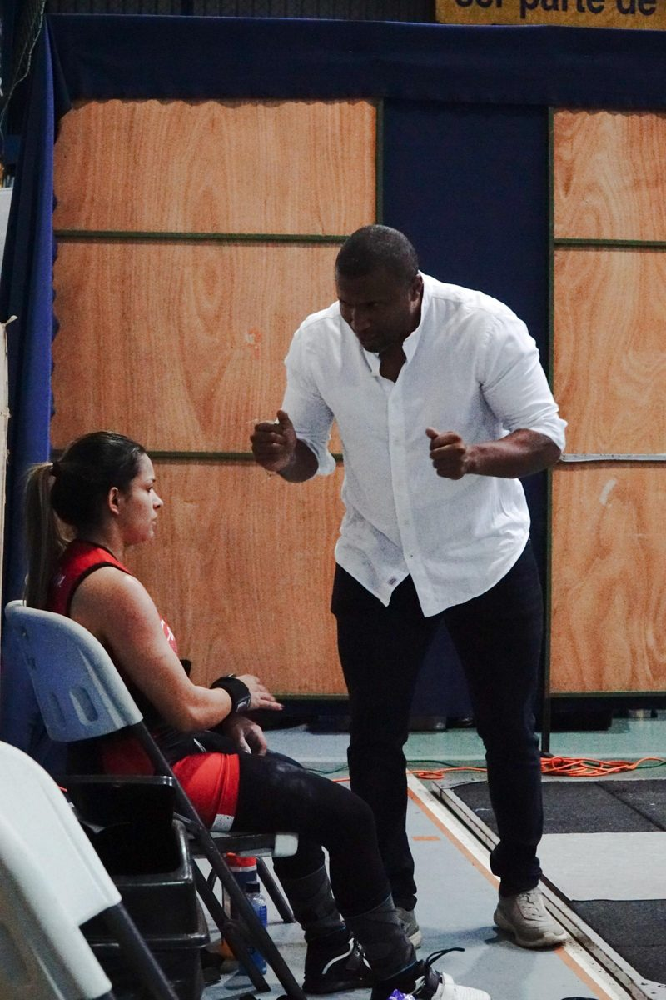
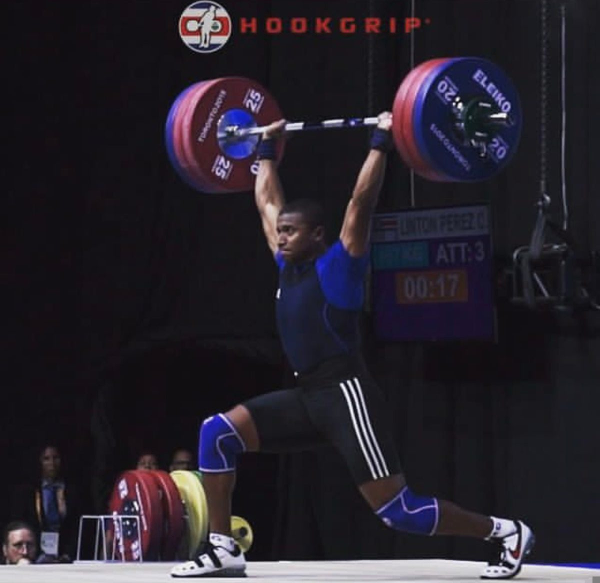
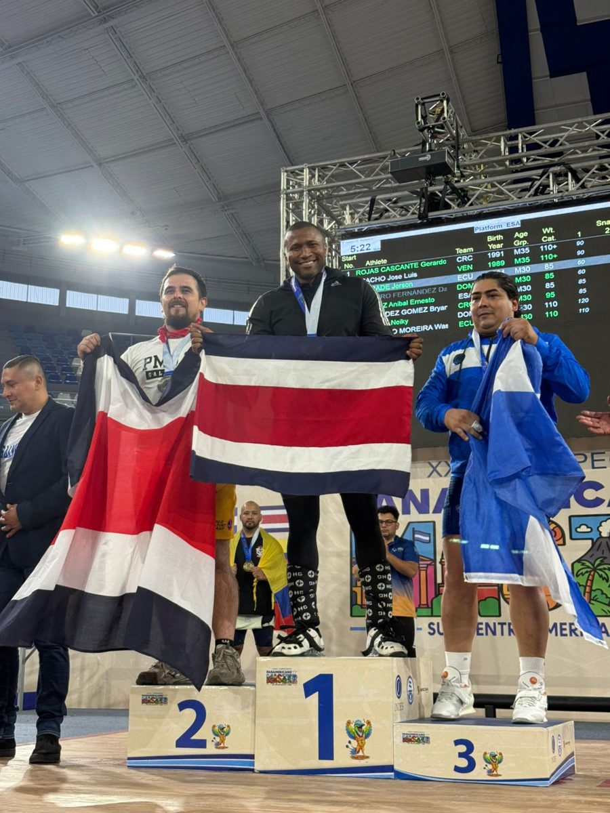
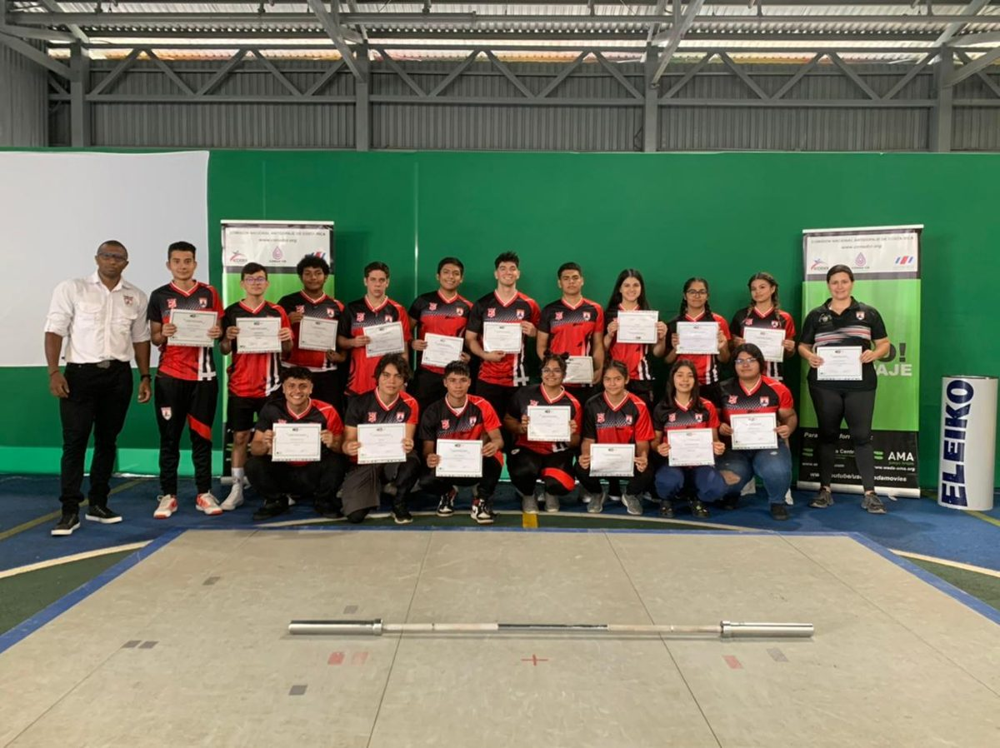

Entrenador, gestor deportivo y atleta máster de halterofilia · Más de 20 años en el deporte
Para empezar
La halterofilia es un deporte olímpico que consiste en levantar una barra desde el suelo hasta por encima de la cabeza en dos movimientos: el arranque, en un solo gesto, y el envión, en dos tiempos. Gana quien levanta más peso sumando ambos, dentro de su categoría de peso corporal.
Más que fuerza, exige técnica, velocidad, coordinación, movilidad y concentración. Por eso también es la base de preparación en muchos otros deportes.
Sí, cuando se enseña de forma progresiva y con supervisión calificada. Primero se aprende la técnica con cargas livianas, y el peso aumenta solo cuando el movimiento está bien dominado. Además de lo físico, el deporte forma disciplina, constancia y respeto.
Ver video del Campeonato Nacional 2026 en Instagram →
Mi recorrido
Sobre la tarima

En 2023 comencé una nueva etapa como atleta máster. Siempre me he mantenido activo, y ese mismo año alcancé el título de Campeón Panamericano Máster. En 2026 lo logré nuevamente, con marcas muy similares a las de mi mejor momento como atleta de selección.
Esta etapa me confirma la importancia del deporte en todas las etapas de la vida. Me vuelve a poner en la tarima y mantiene fresco lo que se siente entrenar y competir, para seguir transmitiendo lo que solo se logra comprender cuando se compite.

Formando atletas
El logro más importante ha sido formar atletas y poder transmitirles lo que el deporte ha formado en mí.
Preparación
Hoy
Después de recorrer cada una de esas etapas nace Lift Club 87, porque más allá de Juegos Nacionales existe una comunidad de levantamiento, y la experiencia me ha enseñado que el deporte es una vía de formación. Crear puentes con aliados estratégicos es lo que me motiva a continuar.
De la forma más integral posible, poniendo a la persona primero. Me gusta formar equipos, y el proceso de entrenamiento lo guían tres dimensiones:

Contacto
Si desea más información sobre entrenamientos, talleres o procesos de formación, con gusto le atiendo.